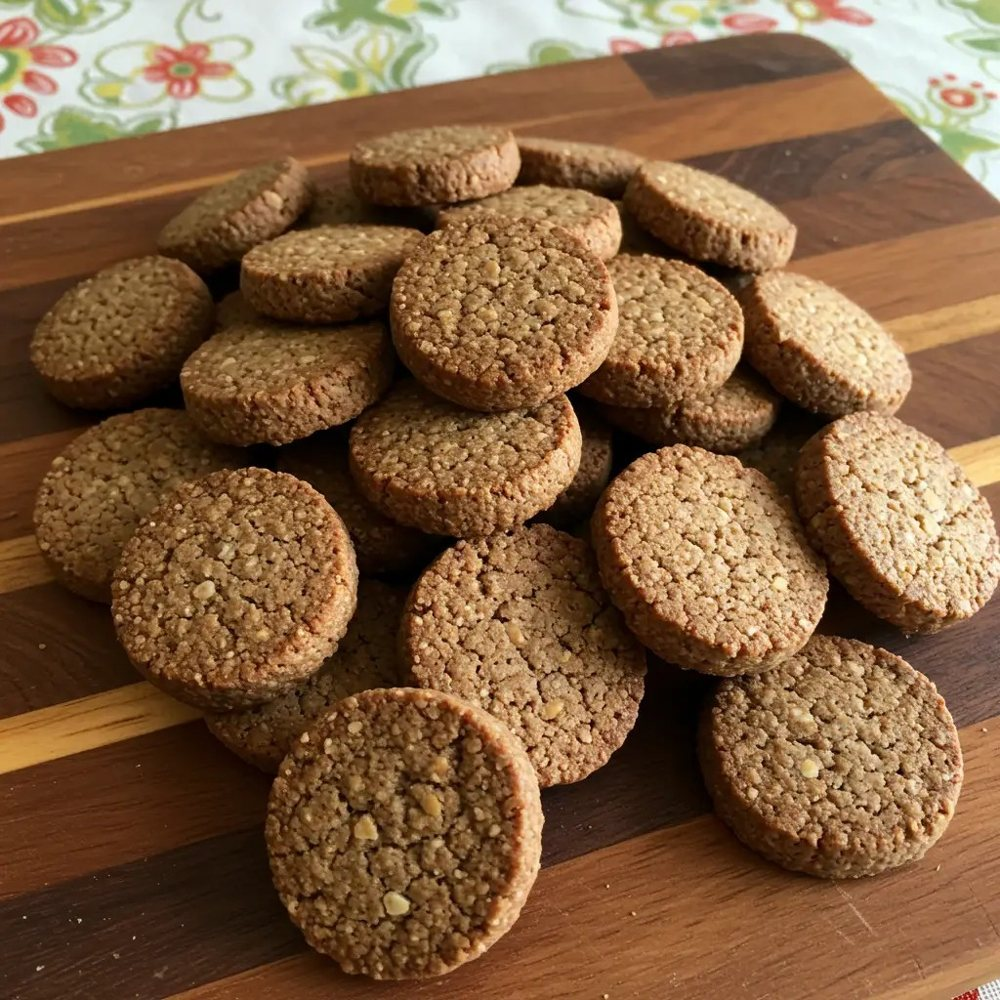

Doces · Biscoitos
Biscoitinhos de caramelo

Ingredientes
- ½ xícara de manteiga
- ⅔ xícara de açúcar mascavo
- 1 ovo
- 1 ⅓ xícara de farinha de trigo
- ½ colher (chá) de fermento em pó
- ½ colher (chá) de essência de baunilha
- ⅓ xícara de nozes picadas
Modo de preparo
- Numa panela, coloque a manteiga e leve ao fogo até derreter. Retire do fogo.
- Adicione o açúcar mascavo e misture bem. Junte o ovo e misture na batedeira até a mistura ficar esbranquiçada (cerca de 10 minutos).
- Peneire a farinha com o fermento e junte à mistura de ovo.
- Adicione a baunilha e as nozes, e mexa bem. Leve à geladeira até a mistura firmar (cerca de 40 minutos). Preaqueça o forno em temperatura média (180 °C).
- Retire a mistura da geladeira e vá enrolando com as mãos, formando bolinhas.
- Coloque as bolinhas numa assadeira e leve ao forno preaquecido para assarem. Retire do forno, deixe esfriar e congele.
Observação
Os biscoitos, se guardados em latas bem fechadas, duram cerca de 2 meses; congelados, duram de 3 a 6 meses. O livro não informa o tempo de forno: vigie até dourarem. Congelamento: cubra os biscoitos com plástico e leve ao freezer até congelarem; passe-os para um saco plástico, retire o ar e vede bem; etiquete e congele. Descongelamento: em temperatura ambiente por cerca de 1 hora.